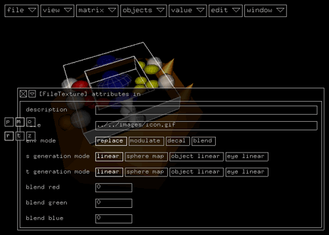
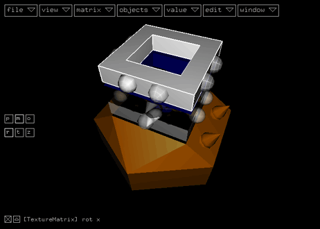

|
 |
||
mini tutorial |
|||
hello world! |
|||
|
In this minitutorial you will learn how to create the smallest possible kodisein project. Start by selecting the global modulator and connect a texture (file) module to it's background connector by activating objects > attributes > texture (file). Open the inspector by activating window > show inspector and enter the path to a texture file in the file field:  The selected texture will be displayed on the attribute module:
If you now switch to play mode (view > start animation), you will see the texture filling the available space: Congratulation! You just created the smallest possible kodisein project :-) But I admit, it is a little bit boring, so let's improve it in some simple steps. First of all, change the background color (if you selected a texture with no transparency, you may skip this step): Select the texture (file) module and activate objects > attributes > color: This will connect and select a color module to the texture (file) module. Change the color values in the inspector: Now, add a texture matrix module (objects > attributes > texture matrix): Select the 'rot x' value in connector (in the image below, the slightly brighter left sphere):  Activate the menu item value > shortcuts > add modulated variable: This shortcut creates the following three value modules: In the next three steps, you will connect the empty value in connector of the red multiply module with a value out connector of the global modulator: First, select the connector by clicking on it (it will be highlighted in white): Second, while holding down Third, connect the selected connectors by activating edit > modules > connect or pressing it's shortcut 'c'. A line will appear, which connects the connected connectors :-) Repeat this process for the 'rot y' connector of the texture matrix and the other value out connector of the global modulator: Congratulations again, you have finished the 'hello world interactive!' project if it looks similar to the following image: In play mode you will be able to rotate the texture by moving the mouse. (Don't forget to listen to some good music while playing with your project :-) In just a few more steps you can improve the project to get some really nice and interesting results. I provide the project file and some screenshots here and leave it as an exercise for you to analyse it: Project FileAutomatically Generated Documentation
|
|